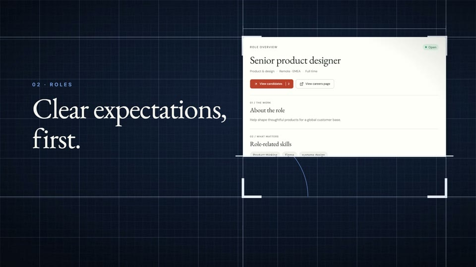
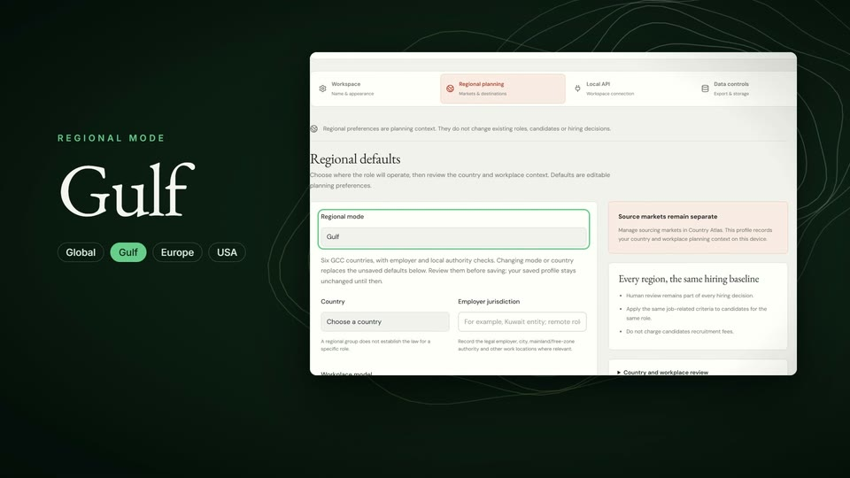
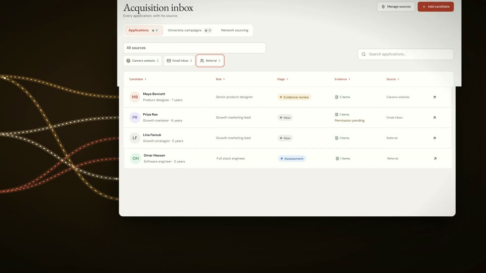
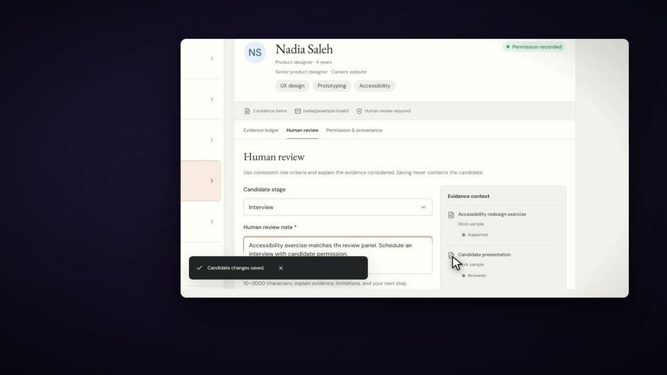
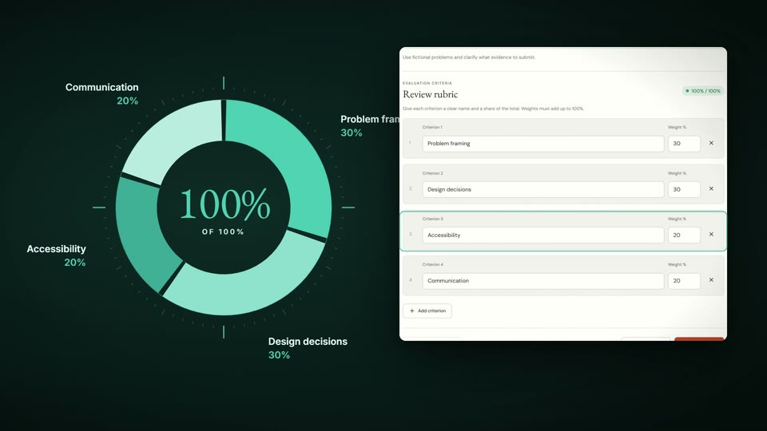
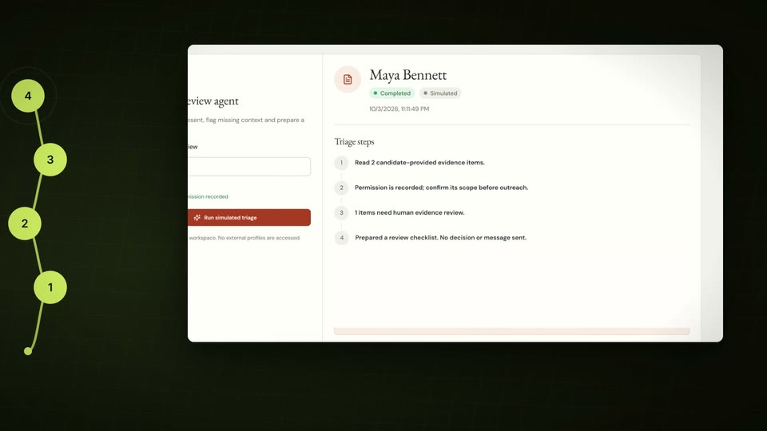
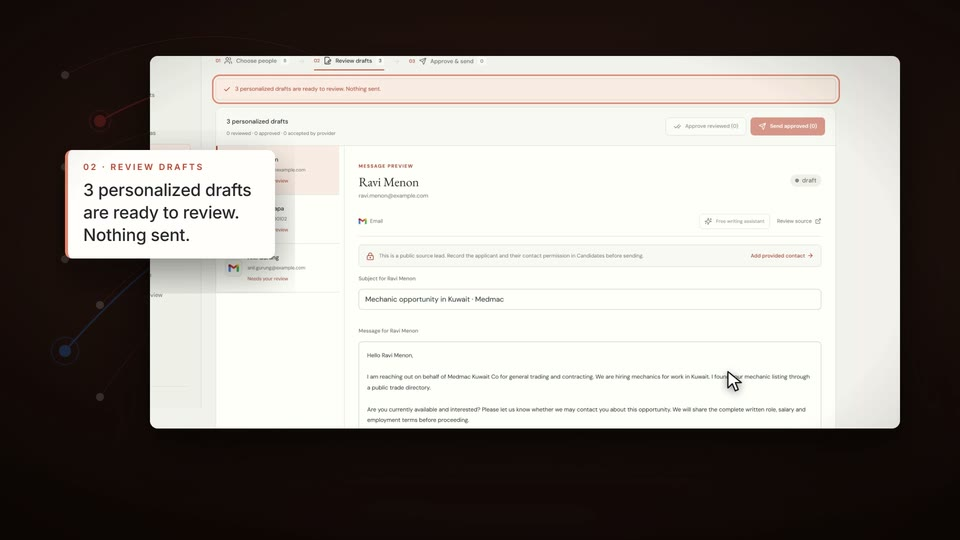
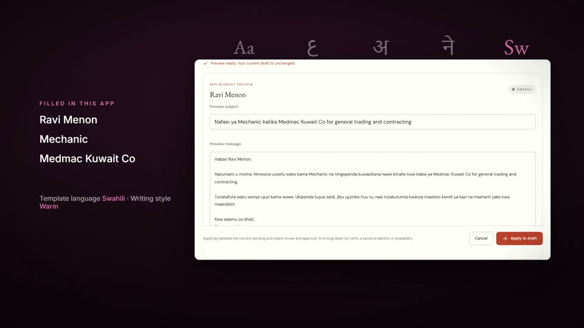
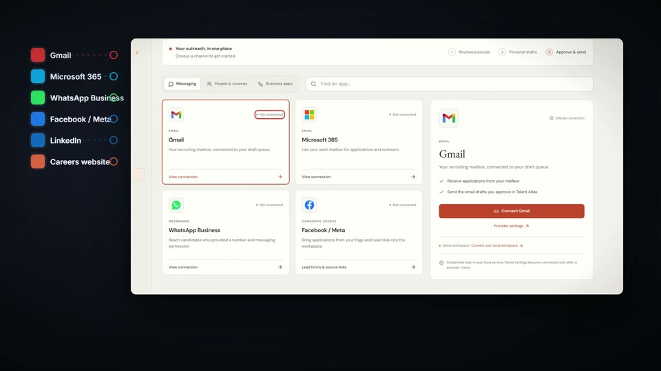
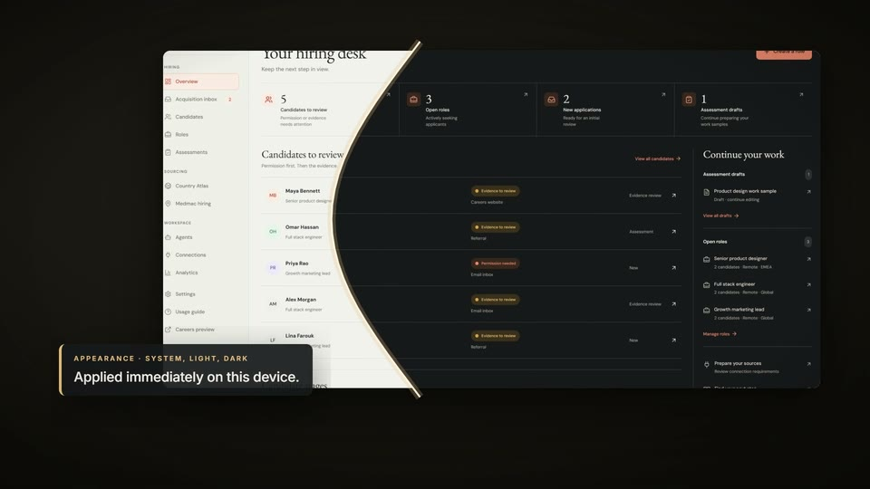

Your hiring desk.
The overview keeps the next step in view: candidates, roles and drafts that need you.
The overview keeps the next step in view: candidates, roles and drafts that need you.
A 150-second film of Talent Atlas 0.3.2: evidence-based recruiting with country sourcing, candidate review, assessments, in-app outreach review and a free writing assistant.
The overview keeps the next step in view: candidates, roles and drafts that need you.

Define the role and its skills, then preview the careers page where people apply with permission.

Country playbooks and regional modes shape outreach plans; they never rank people.

Applications arrive with their channel, stage, evidence and permission status.

A person sets each evidence status and records the review; saving never contacts the candidate.

Role-related work samples use weighted criteria that must add up to 100%.

A clearly labelled simulation prepares a review checklist; decisions stay with a human reviewer.

New in 0.3.1: choose people, review personalized drafts, then approve and send through your own accounts.

New in 0.3.2: a free model writes a generic template in five languages; names are filled in locally.

Redesigned connections stay “Not connected” until a real provider check succeeds.

Decisions stay with you, in light or dark, on the web or in the Windows desktop app.